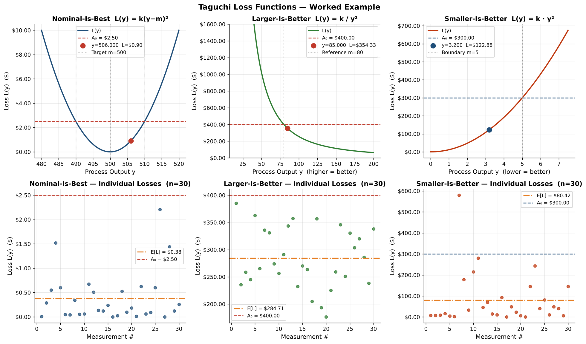

Put a dollar figure on variation — not just on scrap. Calculate quality loss for a single part or a whole batch, then download the same calculator as an Excel workbook, Python or R, with a worked example.
A part at the spec limit and a part just inside it are nearly the same part. Taguchi's quadratic loss reflects that: cost grows smoothly as output drifts from ideal, instead of jumping from $0 to scrap at the limit.
A target value is ideal and deviation either way costs money. Diameters, fill weights, voltages.
More is always better. Bond strength, tensile strength, efficiency, life to failure.
Zero is ideal. Leak rate, wear, shrinkage, noise, contamination, wait time.
A₀ = cost to the customer or business when output reaches the tolerance / reference point (rework, warranty, give-away). Δ = tolerance half-width. m = target (NIB) or reference limit (LIB/SIB).
Pre-loaded with the worked example. Change the inputs or paste your own measurements — one per line, or comma-separated straight from Excel.
The Excel, Python and R versions give identical results to the cent. Both read CSV or Excel, print a summary, plot the curve and individual losses, and export per-part results.
Library + command line. numpy, pandas, matplotlib.
Base R only — no packages. Works in RStudio or Rscript.
NIB, LIB, SIB sheets with live formulas and charts. No code needed.
30 parts: fill weight, bond strength, leak rate.
All files above plus README and example plots.
# install once pip install numpy pandas matplotlib # run the worked example (prints summaries, saves taguchi_example_python.png) python taguchi_loss.py demo # single part python taguchi_loss.py nib --target 500 --delta 10 --A0 2.50 --y 506 # batch from your CSV, save the chart and per-part results python taguchi_loss.py nib --target 500 --delta 10 --A0 2.50 \ --csv example_data.csv --column fill_weight_g --save nib.png --export nib_results.csv # or use it as a library from taguchi_loss import NominalIsBest nib = NominalIsBest(target=500, delta=10, A0=2.50) print(nib.from_csv("example_data.csv", "fill_weight_g").summary())
# from a terminal: run the worked example (saves taguchi_example_R.png) Rscript taguchi_loss.R demo # inside R or RStudio source("taguchi_loss.R") nib <- taguchi_calc("nib", target = 500, delta = 10, A0 = 2.50) taguchi_eval(nib, 506) # single part b <- taguchi_from_csv(nib, "example_data.csv", "fill_weight_g") print(b) # batch summary taguchi_plot(nib, b) # curve + losses taguchi_export_csv(b, "nib_results.csv") lib <- taguchi_calc("lib", m = 80, A0 = 400) sib <- taguchi_calc("sib", m = 5, A0 = 300)
A packaging line measures 30 units for fill weight, seal bond strength and leak rate. These are the results the workbook and both scripts produce from example_data.csv.
| Characteristic | Type | Spec / A₀ | Mean | E[L] / unit | Batch (30) | Status |
|---|---|---|---|---|---|---|
| Fill weight (g) | NIB | 500 ± 10 · $2.50 | 502.49 | $0.38 | $11.46 | Acceptable — 41% of loss is off-target |
| Bond strength (MPa) | LIB | ≥ 80 · $400 | 96.20 | $284.71 | $8,541.19 | Caution — E[L] > 50% of A₀ |
| Leak rate (ccm) | SIB | ≤ 5 · $300 | 2.06 | $80.42 | $2,412.74 | Acceptable — 1 unit over limit |
Reading it: fill weight is fine, but re-centring the filler from 502.5 g to 500 g removes about 41% of its loss for free. Bond strength passes spec on every unit yet carries the largest cost — a capability problem that a pass/fail view hides.
